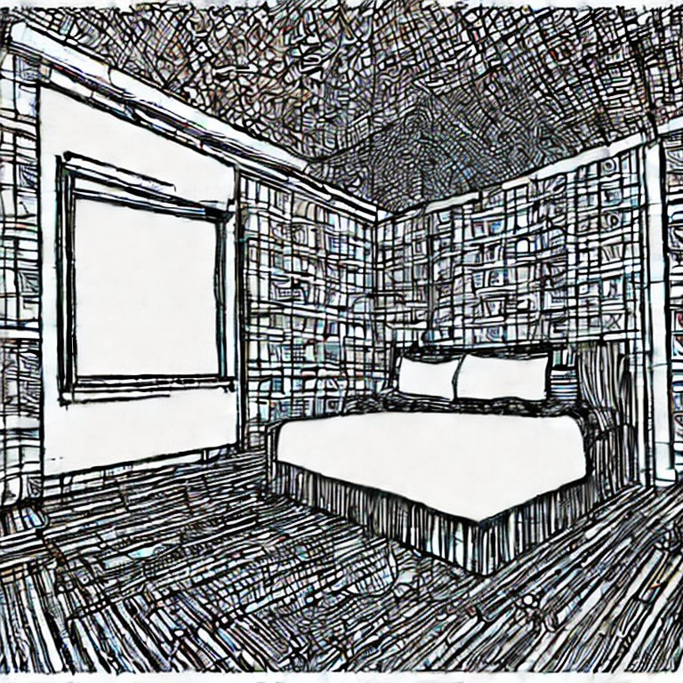
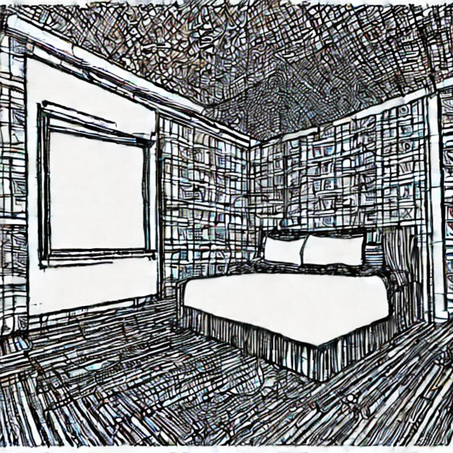
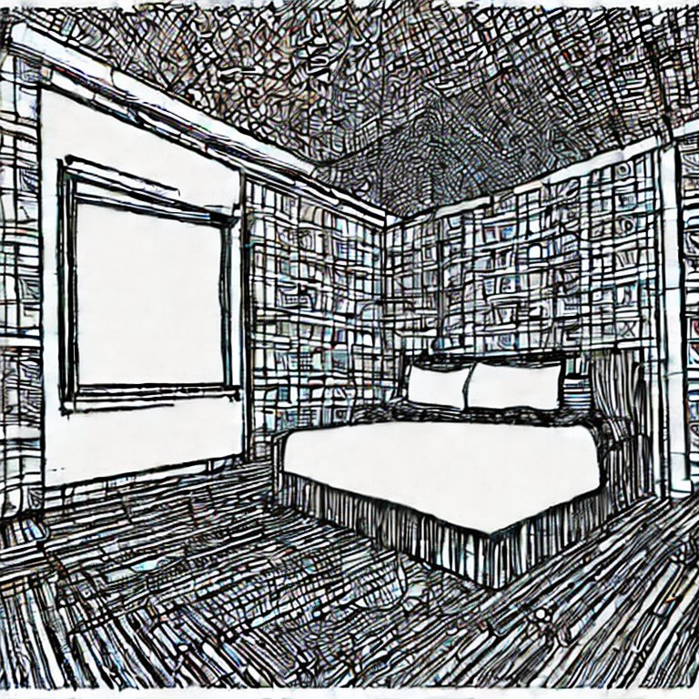
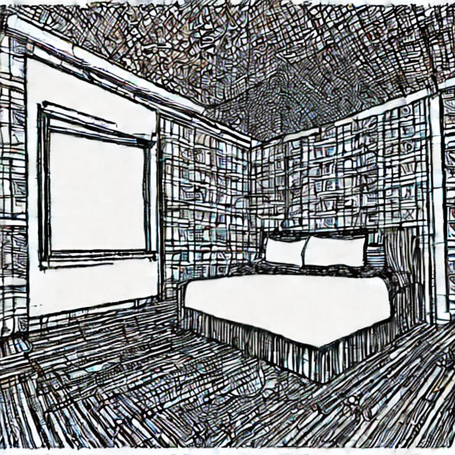

23 JAN 9
this is my bedroom. welcome to it. it's rather vacant at the moment. the bare walls beckon me to adorn them with the works i've generated here in this netbook. the journal entries tend to get a bit jumbled, but, there is a journey somewhere in these pages.